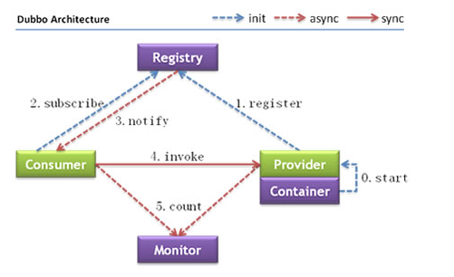
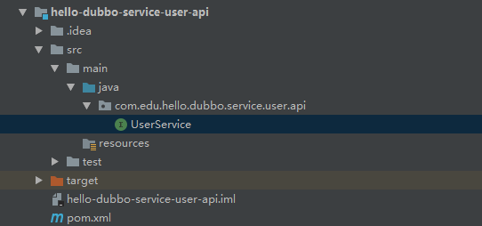
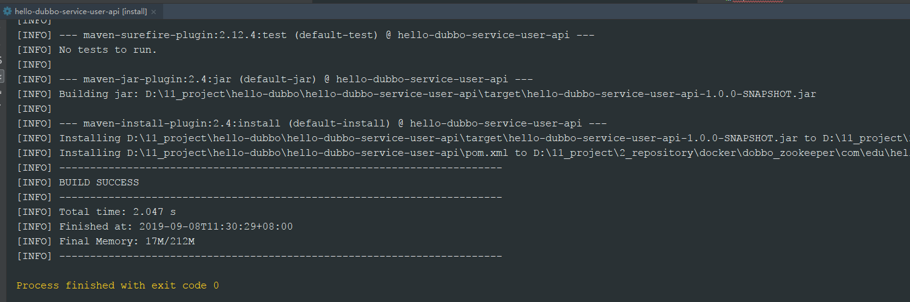
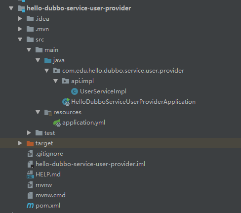
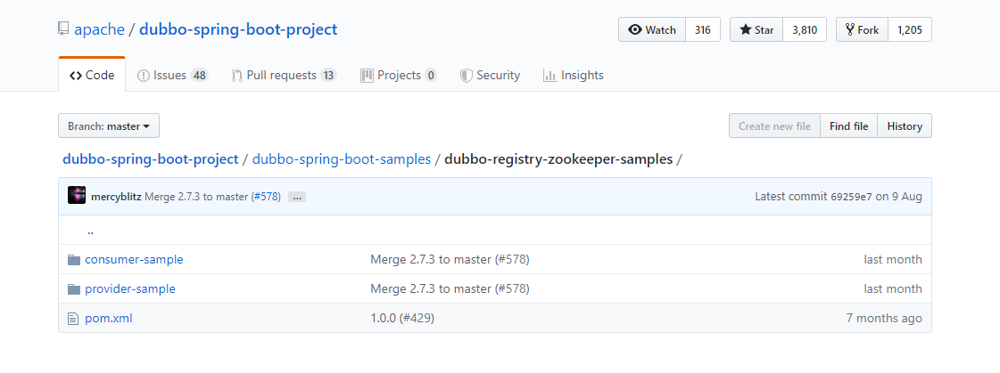
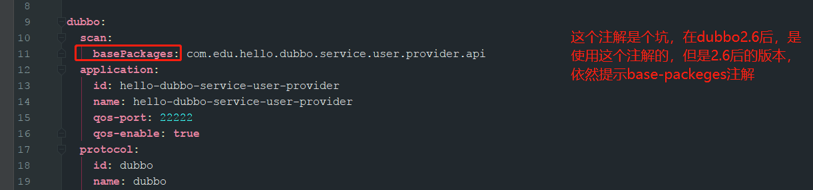
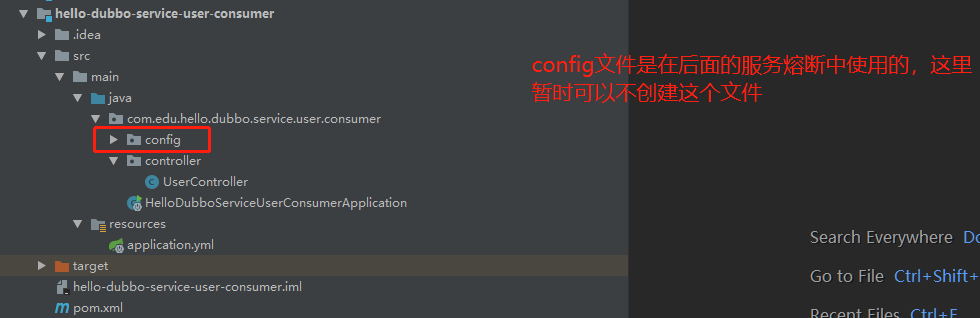
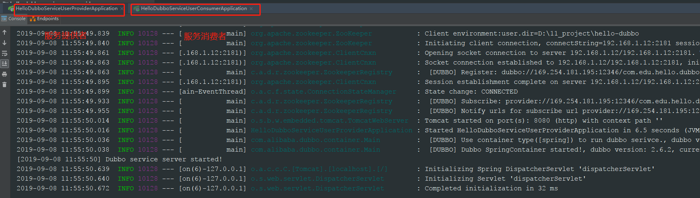
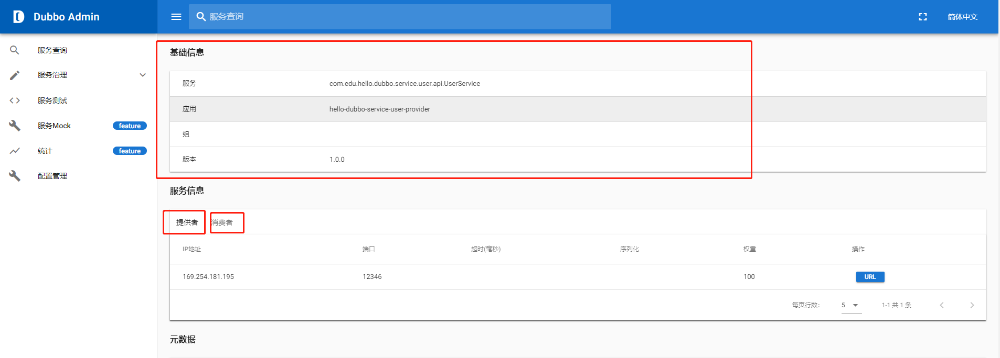

原文连接:https://www.cnblogs.com/dz-boss/p/11485020.html
本文接着上一篇写的《Java微服务（一）：dubbo-admin控制台的使用》，上篇文章介绍了docker，zookeeper环境的安装，并参考dubbo官网演示了dubbo-admin控制台的使用。上篇文章已经搭建好zookeeper服务注册中心，本片文章主要搭建服务消费者和服务提供者。按照微服务的原则，本文将demo分为3部分：服务接口、服务消费者、服务消费者。
服务接口：定义了系统所需要的全部接口。
服务提供者：主要是对接口的实现。
服务消费者：对接口的使用
1.Dubbo介绍

| 节点 | 角色说明 |
|---|---|
Provider |
暴露服务的服务提供方 |
Consumer |
调用远程服务的服务消费方 |
Registry |
服务注册与发现的注册中心 |
Monitor |
统计服务的调用次数和调用时间的监控中心 |
Container |
服务运行容器 |
Dubbo 架构具有以下几个特点，分别是连通性、健壮性、伸缩性、以及向未来架构的升级性。
调用关系说明
- 服务容器负责启动，加载，运行服务提供者。
- 服务提供者在启动时，向注册中心注册自己提供的服务。
- 服务消费者在启动时，向注册中心订阅自己所需的服务。
- 注册中心返回服务提供者地址列表给消费者，如果有变更，注册中心将基于长连接推送变更数据给消费者。
- 服务消费者，从提供者地址列表中，基于软负载均衡算法，选一台提供者进行调用，如果调用失败，再选另一台调用。
- 服务消费者和提供者，在内存中累计调用次数和调用时间，定时每分钟发送一次统计数据到监控中心。
Dubbo 架构具有以下几个特点，分别是连通性、健壮性、伸缩性、以及向未来架构的升级性。
更详细的介绍，请参考官网：http://dubbo.apache.org/en-us/
2.服务接口
通过idea创建一个jar工程，创建工程的过程可以参考《Spring boot 入门（一）：快速搭建Spring boot项目》，此工程的目的只是简单的定义接口，所以这里直接创建jar包，不是maven工程。创建好了后，新建一个接口。以下是我创建的接口：

其中UserService代码如下：
1 package com.edu.hello.dubbo.service.user.api;
2
3 public interface UserService {
4 String sayHi();
5 }创建完接口后，需要把接口install到本地仓库，供服务消费者和服务提供者使用
在Terminal直接指向mvn clean install或者直接在lifecycle目录下点击install进行安装，出现如下页面，表示安装成功

3.服务提供者
服务提供者主要是对接口的实现，用相同的方法创建一个maven工程，创建好后的maven工程目录如下：

其中UserServicelmpl是多接口的实现，代码如下：
1 package com.edu.hello.dubbo.service.user.provider.api.impl;
2
3 import com.alibaba.dubbo.config.annotation.Service;
4 import com.edu.hello.dubbo.service.user.api.UserService;
5 import com.netflix.hystrix.contrib.javanica.annotation.HystrixCommand;
6 import com.netflix.hystrix.contrib.javanica.annotation.HystrixProperty;
7 import org.springframework.beans.factory.annotation.Value;
8
9 /**
10 * @ClassName UserServiceImpl
11 * @Deccription TODO
12 * @Author DZ
13 * @Date 2019/8/31 11:20
14 **/
15 @Service(version = "${user.service.version}")
16 public class UserServiceImpl implements UserService {
17
18 @Value("${dubbo.protocol.port}")
19 private String port;
20
21 /*@HystrixCommand(commandProperties = {
22 @HystrixProperty(name = "circuitBreaker.requestVolumeThreshold", value = "10"),
23 @HystrixProperty(name = "execution.isolation.thread.timeoutInMilliseconds", value = "2000")
24 })*/
25 @Override
26 public String sayHi() {
27 return "Say Hello, i am from " + port;
28 }
29 }其中@HystrixCommand注解在后面熔断器中会讲到，这里先注释。
yml配置如下：


1 spring:
2 application:
3 name: hello-dubbo-service-user-provider
4
5 user:
6 service:
7 version: 1.0.0
8
9 dubbo:
10 scan:
11 basePackages: com.edu.hello.dubbo.service.user.provider.api
12 application:
13 id: hello-dubbo-service-user-provider
14 name: hello-dubbo-service-user-provider
15 qos-port: 22222
16 qos-enable: true
17 protocol:
18 id: dubbo
19 name: dubbo
20 port: 12346
21 status: server
22 serialization: kryo #高速序列化
23 # optimizer:
24
25 registry:
26 id: zookeeper
27 address: zookeeper://192.168.1.12:2181?back=192.168.1.12:2182,192.168.1.12:2183
28 provider:
29 loadbalance: roundrobin #负载均衡
30
31
32
33 management:
34 endpoint:
35 dubbo:
36 enable: true
37 dubbo-shutdown:
38 enabled: true
39 dubbo-configs:
40 enabled: true
41 dubbo-services:
42 enabled: true
43 dubbo-references:
44 enabled: true
45 dubbo-peoperties:
46 enabled: true
47 health:
48 dubbo:
49 status:
50 defaults: memory
51 extras: load,threadpoolpom文件如下：
1 <?xml version="1.0" encoding="UTF-8"?>
2 <project xmlns="http://maven.apache.org/POM/4.0.0" xmlns:xsi="http://www.w3.org/2001/XMLSchema-instance"
3 xsi:schemaLocation="http://maven.apache.org/POM/4.0.0 https://maven.apache.org/xsd/maven-4.0.0.xsd">
4 <modelVersion>4.0.0</modelVersion>
5 <parent>
6 <groupId>org.springframework.boot</groupId>
7 <artifactId>spring-boot-starter-parent</artifactId>
8 <version>2.1.7.RELEASE</version>
9 <relativePath/> <!-- lookup parent from repository -->
10 </parent>
11 <groupId>com.edu</groupId>
12 <artifactId>hello-dubbo-service-user-provider</artifactId>
13 <version>1.0.0-SNAPSHOT</version>
14 <name>hello-dubbo-service-user-provider</name>
15 <description>Demo project for Spring Boot</description>
16
17 <properties>
18 <java.version>1.8</java.version>
19 </properties>
20
21 <dependencies>
22 <dependency>
23 <groupId>org.springframework.boot</groupId>
24 <artifactId>spring-boot-starter</artifactId>
25 </dependency>
26 <dependency>
27 <groupId>org.springframework.boot</groupId>
28 <artifactId>spring-boot-starter-actuator</artifactId>
29 </dependency>
30 <dependency>
31 <groupId>org.springframework.boot</groupId>
32 <artifactId>spring-boot-starter-test</artifactId>
33 <scope>test</scope>
34 </dependency>
35 <dependency>
36 <groupId>com.alibaba.boot</groupId>
37 <artifactId>dubbo-spring-boot-starter</artifactId>
38 <version>0.2.0</version>
39 </dependency>
40 <dependency>
41 <groupId>com.edu</groupId>
42 <artifactId>hello-dubbo-service-user-api</artifactId>
43 <version>${project.version}</version>
44 </dependency>
45 <dependency>
46 <groupId>de.javakaffee</groupId>
47 <artifactId>kryo-serializers</artifactId>
48 <version>0.42</version>
49 </dependency>
50 <!-- https://mvnrepository.com/artifact/org.springframework.cloud/spring-cloud-starter-hystrix -->
51 <!-- https://mvnrepository.com/artifact/org.springframework.cloud/spring-cloud-starter-netflix-hystrix -->
52 <dependency>
53 <groupId>org.springframework.cloud</groupId>
54 <artifactId>spring-cloud-starter-netflix-hystrix</artifactId>
55 <version>2.0.1.RELEASE</version>
56 </dependency>
57 <!-- https://mvnrepository.com/artifact/org.springframework.cloud/spring-cloud-starter-netflix-hystrix-dashboard -->
58 <dependency>
59 <groupId>org.springframework.cloud</groupId>
60 <artifactId>spring-cloud-starter-netflix-hystrix-dashboard</artifactId>
61 <version>2.0.1.RELEASE</version>
62 </dependency>
63
64
65
66 </dependencies>
67
68 <build>
69 <plugins>
70 <plugin>
71 <groupId>org.springframework.boot</groupId>
72 <artifactId>spring-boot-maven-plugin</artifactId>
73 </plugin>
74 </plugins>
75 </build>
76
77 </project>本文pom文件和yml文件主要是根据dubbo官网中服务提供者的pom文件中的依赖而来，具体参考：https://github.com/apache/dubbo-spring-boot-project/tree/master/dubbo-spring-boot-samples/dubbo-registry-zookeeper-samples。


注意basePackages注解
4.服务提供者
按照相同的方式创建服务提供者，配置文件和服务提供者也类似，直接贴代码了

1 package com.edu.hello.dubbo.service.user.consumer.controller;
2
3
4 import com.alibaba.dubbo.config.annotation.Reference;
5 import com.edu.hello.dubbo.service.user.api.UserService;
6 import com.netflix.hystrix.contrib.javanica.annotation.HystrixCommand;
7 import org.springframework.web.bind.annotation.RequestMapping;
8 import org.springframework.web.bind.annotation.RequestMethod;
9 import org.springframework.web.bind.annotation.RestController;
10
11 /**
12 * @ClassName UserController
13 * @Deccription TODO
14 * @Author DZ
15 * @Date 2019/8/31 18:37
16 **/
17 @RestController
18 public class UserController {
19
20 @Reference(version = "${user.service.version}")
21 private UserService userService;
22
23 @HystrixCommand(fallbackMethod = "sayHiError")
24 @RequestMapping(value = "hi", method = RequestMethod.GET)
25 public String sayHi() {
26 return userService.sayHi();
27 }
28
29 public String sayHiError() {
30 return "Hystrix fallback";
31 }
32 }
yml配置文件和pom配置文件和提供者基本类似；
1 spring:
2 application:
3 name: hello-dubbo-service-user-consumer
4
5 user:
6 service:
7 version: 1.0.0
8
9 dubbo:
10 scan:
11 basePackages: com.edu.hello.dubbo.service.user.consumer.controller
12 application:
13 id: hello-dubbo-service-user-consumer
14 name: hello-dubbo-service-user-consumer
15 qos-port: 22223
16 qos-enable: true
17 protocol:
18 id: dubbo
19 name: dubbo
20 port: 12345
21 #status: server
22 serialization: kryo
23 registry:
24 id: zookeeper
25 address: zookeeper://192.168.1.12:2181?back=192.168.1.12:2182,192.168.1.12:2183
26
27
28 management:
29 endpoint:
30 dubbo:
31 enable: true
32 dubbo-shutdown:
33 enabled: true
34 dubbo-configs:
35 enabled: true
36 dubbo-services:
37 enabled: true
38 dubbo-references:
39 enabled: true
40 dubbo-peoperties:
41 enabled: true
42 health:
43 dubbo:
44 status:
45 defaults: memory
46 extras: load,threadpool
47 server:
48 port: 9090 1 <?xml version="1.0" encoding="UTF-8"?>
2 <project xmlns="http://maven.apache.org/POM/4.0.0" xmlns:xsi="http://www.w3.org/2001/XMLSchema-instance"
3 xsi:schemaLocation="http://maven.apache.org/POM/4.0.0 https://maven.apache.org/xsd/maven-4.0.0.xsd">
4 <modelVersion>4.0.0</modelVersion>
5 <parent>
6 <groupId>org.springframework.boot</groupId>
7 <artifactId>spring-boot-starter-parent</artifactId>
8 <version>2.1.7.RELEASE</version>
9 <relativePath/> <!-- lookup parent from repository -->
10 </parent>
11 <groupId>com.edu</groupId>
12 <artifactId>hello-dubbo-service-user-consumer</artifactId>
13 <version>1.0.0-SNAPSHOT</version>
14 <name>hello-dubbo-service-user-consumer</name>
15 <description>Demo project for Spring Boot</description>
16
17 <properties>
18 <java.version>1.8</java.version>
19 </properties>
20
21 <dependencies>
22 <dependency>
23 <groupId>org.springframework.boot</groupId>
24 <artifactId>spring-boot-starter-web</artifactId>
25 </dependency>
26 <dependency>
27 <groupId>org.springframework.boot</groupId>
28 <artifactId>spring-boot-starter-actuator</artifactId>
29 </dependency>
30 <dependency>
31 <groupId>org.springframework.boot</groupId>
32 <artifactId>spring-boot-starter-test</artifactId>
33 <scope>test</scope>
34 </dependency>
35 <dependency>
36 <groupId>com.alibaba.boot</groupId>
37 <artifactId>dubbo-spring-boot-starter</artifactId>
38 <version>0.2.0</version>
39 </dependency>
40 <dependency>
41 <groupId>com.edu</groupId>
42 <artifactId>hello-dubbo-service-user-api</artifactId>
43 <version>${project.version}</version>
44 </dependency>
45 <dependency>
46 <groupId>de.javakaffee</groupId>
47 <artifactId>kryo-serializers</artifactId>
48 <version>0.42</version>
49 </dependency>
50 <!-- https://mvnrepository.com/artifact/org.springframework.cloud/spring-cloud-starter-hystrix -->
51 <!-- https://mvnrepository.com/artifact/org.springframework.cloud/spring-cloud-starter-netflix-hystrix -->
52 <dependency>
53 <groupId>org.springframework.cloud</groupId>
54 <artifactId>spring-cloud-starter-netflix-hystrix</artifactId>
55 <version>2.0.1.RELEASE</version>
56 </dependency>
57 <!-- https://mvnrepository.com/artifact/org.springframework.cloud/spring-cloud-starter-netflix-hystrix-dashboard -->
58 <dependency>
59 <groupId>org.springframework.cloud</groupId>
60 <artifactId>spring-cloud-starter-netflix-hystrix-dashboard</artifactId>
61 <version>2.0.1.RELEASE</version>
62 </dependency>
63 </dependencies>
64
65 <build>
66 <plugins>
67 <plugin>
68 <groupId>org.springframework.boot</groupId>
69 <artifactId>spring-boot-maven-plugin</artifactId>
70 <configuration>
71 <mainClass>com.edu.hello.dubbo.service.user.consumer.HelloDubboServiceUserConsumerApplication</mainClass>
72 </configuration>
73 </plugin>
74 </plugins>
75 </build>
76
77 </project>这里面关于服务熔断和负载均衡的的代码可以暂时不关注，后面会专门对熔断进行讨论。
5.结果
分别启动服务消费者和服务提供者，启动成功后，如下：

同时我们可以启动dubbo-admin控制台查看服务，注意端口的冲突：
